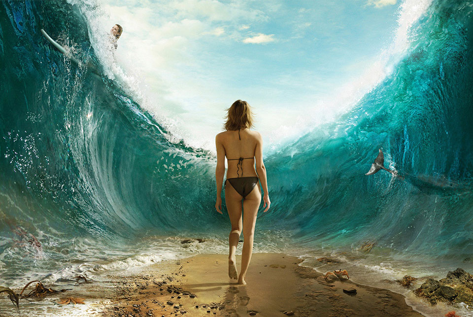
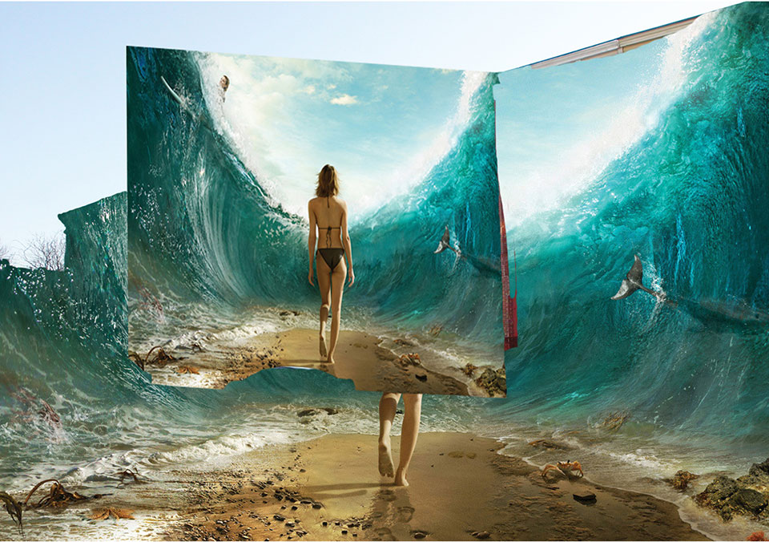
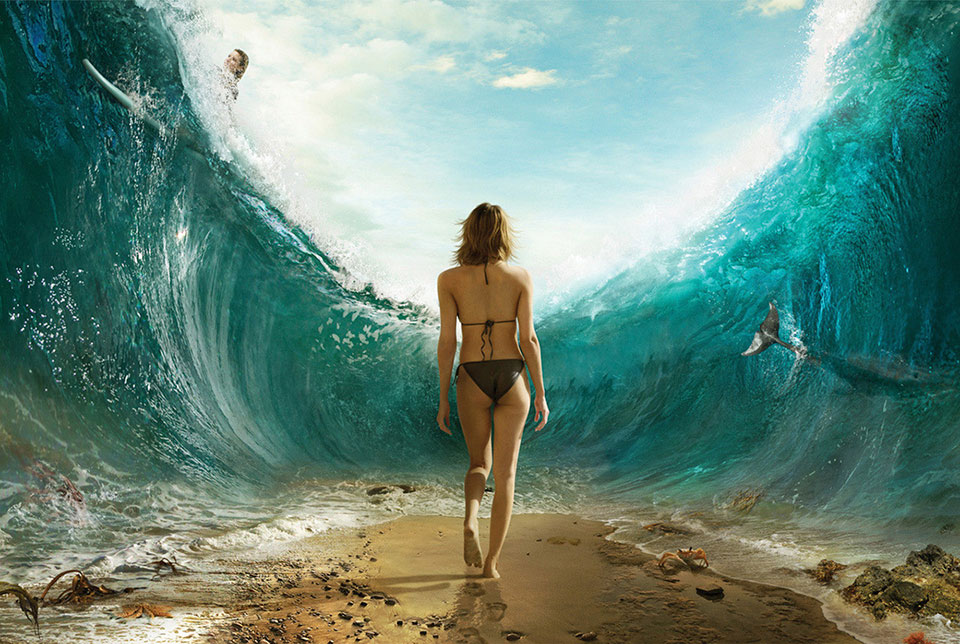
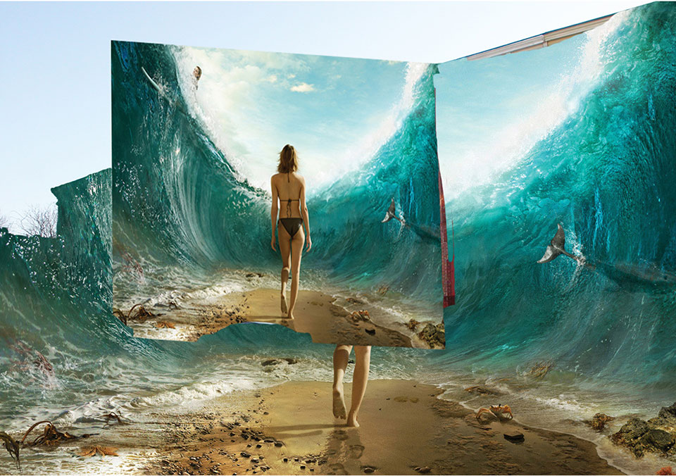

Mart 210
Mart 210| Margaret Sanders Design Mart 210 |
Now the first thing I have to do once I have both pictures opened in photoshop is select the entire parting seas picture and drag it into the picture of Baltimore. So that it created 2 layers in one image file. Then the next thing I had to do was unlock the background layer so that Adobe Photoshop would automatically rename that layer (The city of baltimore) to "Layer 0," making it possible to now edit that picture. Once both layers were unlocked and stacked so that Baltimore was on top of the picture of the parting seas. That little detail is important because otherwise you can not effectively use the eraser tool. Also I used the transform tool to change the size of the parting seas to match the width of the city of Baltimore. So now the pictures are stacked accordingly in one file and I drop the opacity of the city of Baltimore to like 50%. So now I can kind of see the the parting seas underneath. Then I selected the eraser tool and erased the sky of baltimore completely out allowing the layer beneath (the parting seas) to show through. The only thing I have successfully done at this point is completely erase out the abandoned lot in the middle and all the sky of Baltimore. Now the background is consistent and the sky matches the sky from the parting seas picture. (duh.) Now I need to make another layer (layer 2) on top of the existing layers (Layer --> new) and copy in another copy of the parting seas picture. Now I can begin to play with the transform tools and get the baseline of the ocean floor and her feet to line up with the angle of the sidewalk and buildings. I used the Perspective tool to bump the corners into position ( all while using free transform to adjust the size of the picture to fit between the two buildings. (I am not even bothering with the background right now). once I have, Distorted, Warped and nudged the Perspective the appropriate amounts, I can then look at how terrible the background now aligns up with the layer 2. Obviously I need to add another layer of the same picture (layer 4) and use the Clone and stamp tool simultaneously with the free transform tool to make the parting sea walls align and appear to "realistically" miss the buildings, leaving them standing strong. |
 


